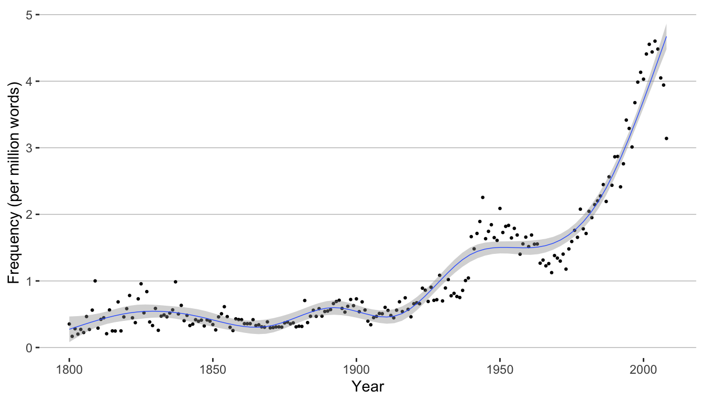
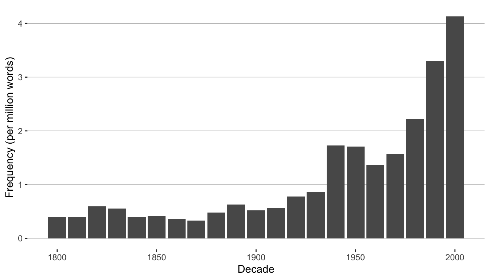
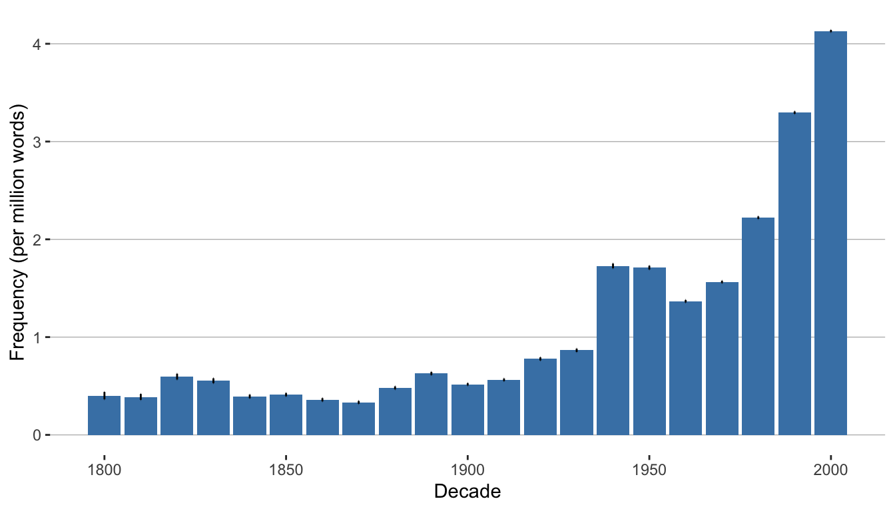
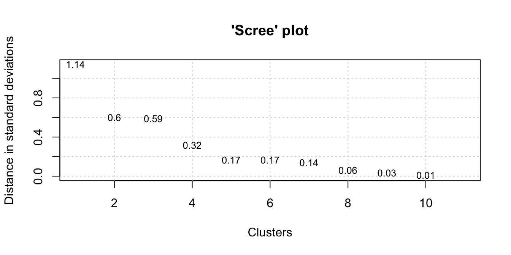
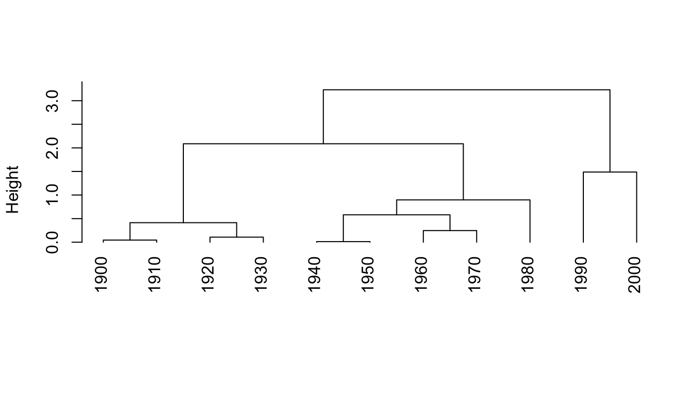
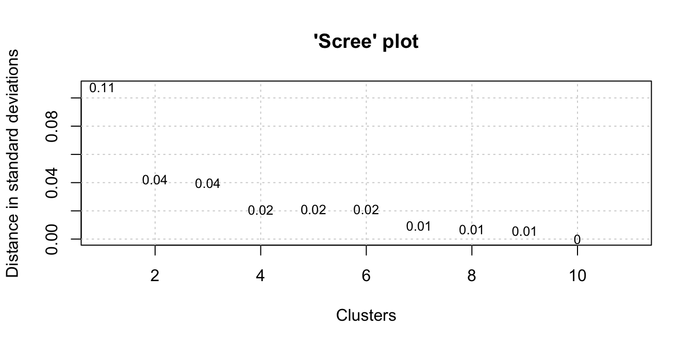
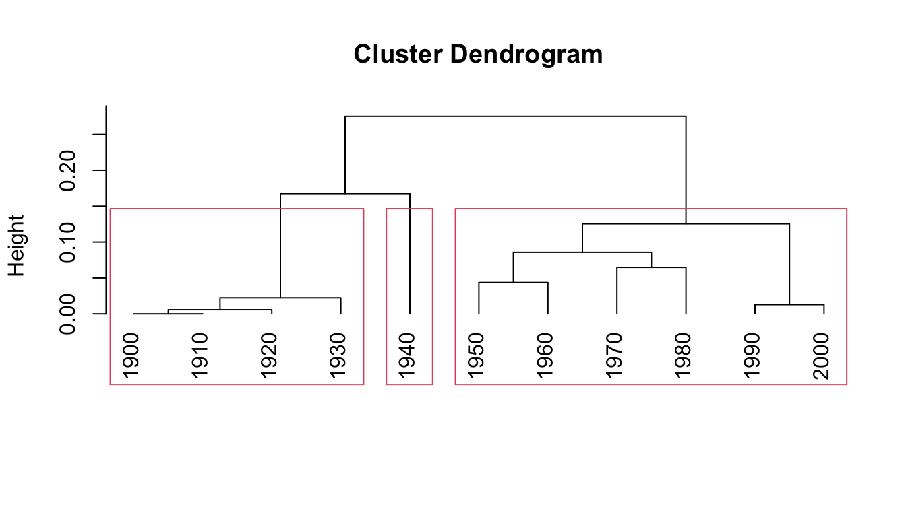

library(tidyverse)
library(dendextend)
library(ggdendro)11 Time Series
For this exercise, we going to make use two packages that can help us plot and manipulate dendrograms.
Load the functions:
source("../R/google_ngrams.R")
source("../R/vnc_functions.R")11.1 Importing Google Ngrams Data
We won’t do much with the google_ngram() function because most of Google data table are HUGE. Though they are formatted as simple tab-delimited text files, they often run in the multiple gigabytes in size. You can access them here:
http://storage.googleapis.com/books/ngrams/books/datasetsv2.html
With that in mind, we’ll do a simple demo of the function with one of the smaller 1-gram tables: Q. First, we’ll make a vector of the word forms we want to count. In this case, we’ll count 3 common forms of quiz.
wfs <- c("quiz", "quizzes", "quizzed")
q <- google_ngram(wfs, variety = "eng", by = "year")Note that before we plot, we should check for gaps – in other words, years when counts are not in the data and, thus, zero. We can use the is.sequence() function.
Here we’ll check the full Year column and only years after 1799.
q$Year %>% is.sequence()[1] FALSEq$Year[q$Year > 1799] %>% is.sequence()[1] TRUE11.2 Peaks and Troughs
If we wanted to plot from the first instance (1515) onward, we would need to fill in the all missing years (rows) with zero values. We would also want to check the underlying data. A quick search of Google Books seems to suggest that sixteenth century examples come from passages that are not in English and often in the form qu’iz.
Instead, we will plot only data from 1800 and after. And we can plot the data with a confidence interval to identify “peaks and troughs” (Brezina pgs. 241-247).
ggplot(q %>% filter(Year > 1799), aes(x=Year, y=Per_10.6)) +
geom_point(size = .5) +
geom_smooth(method = "gam", formula = y ~ s(x, bs = "cs"), size=.25) +
labs(x="Year", y = "Frequency (per million words)")+
theme(panel.grid.minor.x=element_blank(),
panel.grid.major.x=element_blank()) +
theme(panel.grid.minor.y = element_blank(),
panel.grid.major.y = element_line(colour = "gray",size=0.25)) +
theme(rect = element_blank()) +
theme(legend.title=element_blank())
We can also aggregate the counts by decade.
q <- google_ngram(wfs, variety = "eng", by = "decade")ggplot(q %>% filter(Decade > 1799), aes(x=Decade, y=Per_10.6)) +
geom_bar(stat = "identity") +
labs(x="Decade", y = "Frequency (per million words)")+
theme(panel.grid.minor.x=element_blank(),
panel.grid.major.x=element_blank()) +
theme(panel.grid.minor.y = element_blank(),
panel.grid.major.y = element_line(colour = "gray",size=0.25)) +
theme(rect = element_blank()) +
theme(legend.title=element_blank())
11.2.1 Confidence Intervals
To add confidence intervals to a bar plot, we need to calculate the upper and lower bounds. For this we’ll use the prop.cint() from the corpora package:
https://www.rdocumentation.org/packages/corpora/versions/0.5/topics/prop.cint
We only need to pass the function a vector of frequencies and a vector of total counts (corpus sizes). We’ll bind those to a new data frame and normalize per million tokens.
word_freq <- q %>%
bind_cols(corpora::prop.cint(k = q$AF, n = q$Total, conf.level = 0.95)) %>%
mutate(lower = lower*1000000) %>%
mutate(upper = upper*1000000)And plot adding geom_errorbar()
ggplot(word_freq %>% filter(Decade > 1799), aes(x=Decade, y=Per_10.6)) +
geom_bar(stat = "identity", fill="steelblue") +
geom_errorbar(aes(ymin=lower, ymax=upper), width=.1) +
labs(x="Decade", y = "Frequency (per million words)") +
theme(panel.grid.minor.x=element_blank(),
panel.grid.major.x=element_blank()) +
theme(panel.grid.minor.y = element_blank(),
panel.grid.major.y = element_line(colour = "gray",size=0.25)) +
theme(rect = element_blank()) +
theme(legend.title=element_blank())
11.3 Periodization
Just eyeballing the data, it looks like there might be some interesting changes in frequency in the middle of the 20th century, and late in the 20th century.
To better understand how these changes group together (what is called “periodization”) we can turn turn Variability-Based Neighbor clustering.
We’re going take data for the 20th century onward and begin with a scree plot.
q <- q %>% filter(Decade > 1899)vnc_scree(q$Decade, q$Per_10.6)
From the scree plot, it looks like we have 2-3 well-formed clusters. Now, we’ll generate the data for our dendrogram. Keep in mind this is a very specific implementation of hierarchical clustering as we need to maintain the order of our time series.
The distance is based on standard deviations of sequential pairs of time intervals. Alternatively, you can set the distance.measure to “cv” for to use the coefficient of variation.
hc <- vnc_clust(q$Decade, q$Per_10.6, distance.measure = "sd")
plot(hc, hang = -1, main = "", sub = "", xlab = "")
The purpose of Variability-Based Neighbor Clustering is to divide the use of a word or phrase into historical periods based on changes in frequency. Rather than assuming that a year, decade, or other division is statistically meaningful, the algorithm clusters segments of time into periods.
Now let’s look at some other data: frequencies of the bigram witch hunt and the plural witch hunts. These also comes from Google Books. You can gather the data yourself at a later time using google_ngram(), if you want, but for the purposes of this exercise we’ll skip that step to save time.
load("../data/witch_hunt.rda")
wh <- witch_hunt %>%
filter(decade > 1899) %>%
dplyr::select(decade, counts_permil)
vnc_scree(wh$decade, wh$counts_permil, distance.measure = "sd")
hc <- vnc_clust(wh$decade, wh$counts_permil, distance.measure = "sd")For the next step, we’ll cut the dendrogram into 3 clusters based on the output of the scree plot we that generated. Note that we’re storing the output into a list cut_hc.
plot(hc, hang = -1)
cut_hc <- rect.hclust(hc, k=3)
11.3.1 Advanced plotting
We’ve already plotted our data with base R. However, if we want more control, we probably want to use ggplot2. To do that, we need to go through a couple of intermediate steps. First, convert the cut_hc object that we just generated into a data frame and join that with our original witch hunt data.
clust_df <- data.frame(decade=as.numeric(names(unlist(cut_hc))),
clust=rep(c(paste0("clust_", seq(1:length(cut_hc)))),
times=sapply(cut_hc,length)))
clust_df <- clust_df %>% right_join(wh, by = "decade")Next, we’ll convert our cluster data into dendrogram data using as.dendrogram() from ggdendro. We also MUST maintain the order of our time series. There are a variety of ways of doing this, but dendextend has an easy function called sort(). We’ll take the easy way!
To get ggplot-friendly data, we have to transform it yet again… This time using the ggdendro package’s function dendro_data().
dend <- as.dendrogram(hc) %>% sort
dend_data <- dendro_data(dend, type = "rectangle")Now let’s do some fancy plotting! We’re going to combine the dendrogram and a time series line plot like Gries and Hilpert (Gries and Hilpert 2012) do on pg. 140 of their chapter on VNC.
The first three lines pull data from clust_df for the line plot using the clusters to color each point according to group. The geom_segment pulls data from dend_data to build the dendrogram. For the tick marks we again pull from dend_data using the x column for the breaks and and the label column to label the breaks.
ggplot(clust_df, aes(x = as.numeric(rownames(clust_df)), y = counts_permil)) +
geom_line(linetype = "dotted") +
geom_point(aes(color = clust), size = 2) +
geom_segment(data = dend_data$segments, aes(x = x, y = y, xend = xend, yend = yend))+
scale_x_continuous(breaks = dend_data$labels$x,
labels=as.character(dend_data$labels$label)) +
xlab("") + ylab("Frequency (per million words)") +
theme_minimal()
11.4 Works cited
Gries, Stefan, and Martin Hilpert. 2012. “Variability-Based Neighbor Clustering.” The Oxford Handbook of the History of English, 134–44. https://www.stgries.info/research/2012_STG-MH_VarNeighbClustering_OxfHBHistEngl.pdf.